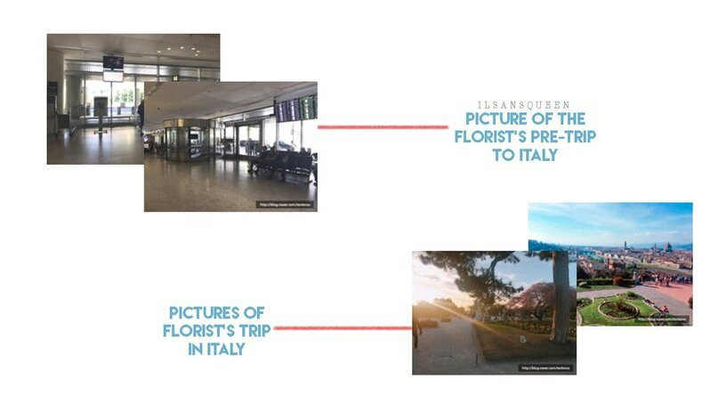

In fact, my family is not very rich. It was difficult for me to study abroad. I was a foreigner and did not speak English. I could not imagine my future. That day, when we promised each other to fly to Italy together, I was waiting for my friend at the airport. Then I saw the glass door outside, as it gets out of the bus with a tough guy. I hid right there. Why did I do this ... I don’t know either ... I just instinctively hid, turned the other way and left. I thought: “That's right. We cannot go to Italy together. For her, I'm just a miserable foreigner who knows nothing. ”
She called, but I didn’t pick up the phone. I just stupidly looked at myself in the toilet mirror at the airport. We booked one flight, so it was supposed to be somewhere on the plane, but I did not go to her. I was just hoping. I hoped that she would look around the plane and return to find me. But even after the plane crossed the Atlantic, crossed the Italian sky and landed at the airport ... No one came to find me. ‘La Città di smeraldo’ was a painful and happy memory for me. Smeraldo's flower was so beautiful that I sobbed. And something strange happened that night. I was sleeping at home when I heard a strange noise. My bed was far from the window, but I could hear someone knocking on it. It was a two-level room, and the outside was quiet.
It was already after midnight, the windows were curtained, so I could not see anything. I was not afraid, it was just strange. I wanted to get up and see who was still knocking on the window, but stopped. I forced myself to think that these branches hit the window and tried to fall asleep again, but, to be honest, I couldn’t. I continued to listen to this sound and to lie to myself that I had experienced this situation many times. It was about noon when that friend called me. But no, it was not her, but her brother. My friend went to the airport when she had an accident, and after midnight she had breathing problems and went into another world. Before leaving the hostel, I opened a window near my bed. The sun was shining and the Smeraldo was growing somewhere far away. I looked at the flowers, sat under the sun and felt a breath of wind.
It was just for a moment, but I felt that she was looking at the flowers with me. On the way home from the airport upon my return to America, I received the good news that my dream would come true. My flower shop with Smeraldo in Korea has been approved by the Smeraldo Academy. Since this flower is a rare species, the Academy carefully controls all foreign sales, but now my registration in the association has been approved. After that ... Three years have passed since I opened a store in Korea, but every time I return to the thought of my friend, who left before I could see him. 